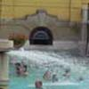

sreda, 10. junij 2009.
Na Svetoj Gori
Svako prolećno putovanje (do neke evropske prestonice, mađarske ili češke banje, italijanskih regiona) osvežava i popravlja raspoloženje, ali teško da bilo koja destinacija više od Svete Gore može čoveka da opusti, oslobodi nervoze i resetuje. Put na Svetu Goru je ujedno i hodočašće, i aktivan odmor uz šetnju i planinarenje, i meditiranje uz more, mesec i zvezde, mirise i zvuke.
ponedeljek, 1. september 2008.
Banje Budimpešte
Banja Széchenyi je u centru Budimpešte, u Gradskom parku, i ima otvorene i zatvorene bazene sa termalnim vodama različitog sastava i temperature, razne vrste sauna, kao i prateće usluge - Masaže, lekarske preglede, kozmetičke tretmane i slično. Osim fascinantnog arhitektonskog izgleda (sagrađena je 1913. godine) i blagotvornog dejstva voda, meni su zanimljivi i nepretenciozni prateći sadržaji.
sreda, 14. november 2007.
Jel' ovaj čovek našao novi posao?
Neki ljudi su, uprkos svim manama i preterivanjima, jednostavno zanimljivi. Pa im se više toga oprašta.
A pomaže i ako su zgodni.
nedelja, 6. maj 2007.
One Mile from Home
torek, 6. februar 2007.
Ana Ivanović dot kom
ãetrtek, 4. januar 2007.
Tehnologija i nostalgija
ponedeljek, 30. oktober 2006.
7 stvari o Ljubljani
ponedeljek, 2. oktober 2006.
Mountain Biking
torek, 26. september 2006.
Jesenje radosti
petek, 15. september 2006.
Project Gradac
ponedeljek, 11. september 2006.
Priča o Olimpu
petek, 8. september 2006.
Jelena Janković Televized
ãetrtek, 20. julij 2006.
Bicikl, pa Kjoto
sreda, 5. julij 2006.
Tour de France
petek, 23. junij 2006.
Go Ghana Go!
ponedeljek, 29. maj 2006.
15 dugih godina
sreda, 24. maj 2006.
Parkovi su super
ãetrtek, 18. maj 2006.
Finale Lige šampiona
sreda, 29. marec 2006.
Klizanje, šah, lajf
sobota, 19. november 2005.
Revolution
nedelja, 16. oktober 2005.
Gradac
sreda, 28. september 2005.
Bear mountain

 RSS feed
RSS feed
 sadržaji se objavljuju pod
sadržaji se objavljuju pod